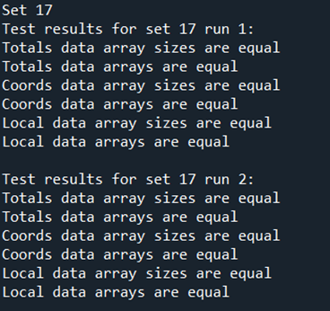

Running tests#
Motivation#
Once we have learnt to use the program through the tutorials, we can use testing as a tool to check our system is running everything correctly. It is optional but recommended.
The test directory of the GitHub repository contains a set of test data for all the pre-defined sets and different combinations of boundary type and dispersal type options. This data defines the correct output for the program - they are the same output files we have been working with: Totals.txt, LocalData.txt and CoordinateList.txt.
You may choose to write your own testing script to compare the data to yours but test also contains a sample script GeneralMetapopTest.py to make things easier. The script contains other useful sections, like running the executable program file directly from the Python script and generating other parameter and coordinate input files from the test sets.
Running a test#
In this section we will be testing our results from Tutorial 5.1 Setting multiple release times to set 17 from the test data. We will assume familiarity with Python.
To access the test data you will firstly need to make sure you have downloaded or cloned the contents of the test directory from the GitHub repository. Then you can use the GeneralMetapopTest.py script, running the first cell to import the libraries,
Import libraries cell
import pandas as pd
import os
import subprocess
import numpy as np
import matplotlib.pyplot as plt
and then running the last cell, ‘Compare test case data for all runs’. Instead of testing all sets in the test data, we will specify only set 17.
Compare data cell
# ** Modify oracle data folder path, and test data folder path as needed! **
oracle_folder_path = "C:\\Users\\MyUser\\Projects\\GeneralMetapop\\test\\oracle\\toroid_distance_kernel"
test_data_folder_path = "C:\\Users\\MyUser\\Projects\\GeneralMetapop\\build\\output_files"
# ** Modify the list of set numbers selected as needed **
sets = [17]
# ** Modify the list of num_runs in each set selected as needed **
num_runs_list = [2 for i in range(0, len(sets))]
make_plot = True
for j in range(0, len(sets)):
print("Set " + str(sets[j]))
for i in range(1, num_runs_list[j] + 1):
#import oracle data
os.chdir(os.path.join(oracle_folder_path, "set" + str(sets[j])))
totals_oracle = np.loadtxt("Totals" + str(sets[j]) + "run" + str(i) + ".txt", skiprows=2)
times_oracle = totals_oracle[:, 0]
tot_males_oracle = totals_oracle[:, 1:]
coords_oracle = np.loadtxt("CoordinateList" + str(sets[j]) + "run" + str(i) + ".txt", skiprows=2)
local_oracle = np.loadtxt("LocalData" + str(sets[j]) + "run" + str(i) + ".txt", skiprows=2)
# plot oracle data
if make_plot:
plt.figure()
plt.title("Totals oracle data for " + "set " + str(sets[j]) + " run " + str(i))
plt.xlabel("Day")
plt.ylabel("Total number of individuals")
plt.plot(times_oracle, tot_males_oracle[:, 0], label="$M_{WW}$")
plt.plot(times_oracle, tot_males_oracle[:, 1], label="$M_{WD}$")
plt.plot(times_oracle, tot_males_oracle[:, 2], label="$M_{DD}$")
plt.plot(times_oracle, tot_males_oracle[:, 3], label="$M_{WR}$")
plt.plot(times_oracle, tot_males_oracle[:, 4], label="$M_{RR}$")
plt.plot(times_oracle, tot_males_oracle[:, 5], label="$M_{DR}$")
plt.legend()
# import test data
os.chdir(test_data_folder_path)
totals_test = np.loadtxt("Totals" + str(sets[j]) + "run" + str(i) + ".txt", skiprows=2)
times_test = totals_test[:, 0]
tot_males_test = totals_test[:, 1:]
coords_test = np.loadtxt("CoordinateList" + str(sets[j]) + "run" + str(i) + ".txt", skiprows=2)
local_test = np.loadtxt("LocalData" + str(sets[j]) + "run" + str(i) + ".txt", skiprows=2)
# plot test data
if make_plot:
plt.figure()
plt.title("Totals test data for " + "set " + str(sets[j]) + " run " + str(i))
plt.xlabel("Day")
plt.ylabel("Total number of individuals")
plt.plot(times_test, tot_males_test[:, 0], label="$M_{WW}$")
plt.plot(times_test, tot_males_test[:, 1], label="$M_{WD}$")
plt.plot(times_test, tot_males_test[:, 2], label="$M_{DD}$")
plt.plot(times_test, tot_males_test[:, 3], label="$M_{WR}$")
plt.plot(times_test, tot_males_test[:, 4], label="$M_{RR}$")
plt.plot(times_test, tot_males_test[:, 5], label="$M_{DR}$")
plt.legend()
# compare
print("Test results for " + "set " + str(sets[j]) + " run " + str(i) + ":")
if totals_test.shape == totals_oracle.shape:
print("Totals data array sizes are equal")
else:
print("Totals data array sizes are NOT equal!")
if (totals_test == totals_oracle).all():
print("Totals data arrays are equal")
else:
print("Totals data arrays are NOT equal!")
if coords_test.shape == coords_oracle.shape:
print("Coords data array sizes are equal")
else:
print("Coords data array sizes are NOT equal!")
if (coords_test == coords_oracle).all():
print("Coords data arrays are equal")
else:
print("Coords data arrays are NOT equal!")
if local_test.shape == local_oracle.shape:
print("Local data array sizes are equal")
else:
print("Local data array sizes are NOT equal!")
if (local_test == local_oracle).all():
print("Local data arrays are equal")
else:
print("Local data arrays are NOT equal!")
print("")
print("")
Notice as well that you will need to modify the paths at the top of the cell to the ones on your system. oracle_folder_path is the path to your chosen test data directory, for example oracle/toroid_distance_kernel from the cloned test directory. The script will assume set 17 data is under a subdirectory called set17. test_data_folder_path is the path to the output data you have generated, for example build/output_files if you have followed the Installation instructions.
Running the cell we should get the following output,
which means our data passes all tests!
The script will have also generated plots for us to visually compare results. These can be useful to debug an issue when the tests fail. We can turn this off by setting the make_plot variable to False.
It is important to note that these are end-to-end tests. In the future the testing suite may be extended if requested.